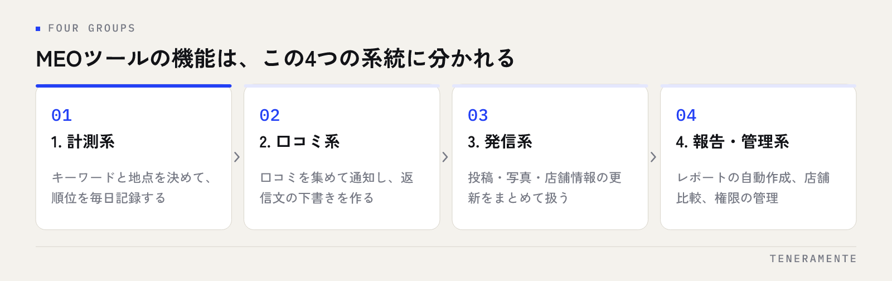

MEOツールを比べ始めると、機能一覧の項目数で迷います。どれも「順位計測」「口コミ管理」「投稿管理」が並んでいて、違いが見えないからです。先に決めるべきなのは、どのツールが優れているかではなく、自店で今いちばん手が止まっている作業がどれかです。そこが決まれば、比べる機能は4分の1に絞れます。
📌 この記事の結論
MEOツールの機能は「計測」「口コミ」「発信」「報告・管理」の4系統に分かれます。今止まっている作業の系統から1つ選ぶのが確実で、機能数の多さで選ぶと使わない画面にお金を払うことになります。順位計測だけは人手で続けにくいため、どの系統を選んでも土台として要ります。
01MEOツールの機能は4つの系統に分かれる
MEOツールと呼ばれるものは、看板が同じでも中身が分かれます。機能一覧を広げると数十項目になりますが、やっていることは次の4つの系統に収まります。

計測系は、Googleマップやローカル検索での表示順位を測って記録する機能です。キーワードと地点を決めて毎日取得し、推移をグラフやカレンダーで見られるようにします。エリアを格子状に測って地図上のヒートマップにするものもあります。
口コミ系は、届いた口コミを一か所に集め、通知を出し、返信文を作る機能です。来店客に口コミを依頼するフォームやQRコードの発行が含まれることもあります。
発信系は、投稿・写真・店舗情報の更新をまとめて扱う機能です。予約投稿、複数店舗への一括投稿、写真の整理などがここに入ります。
報告・管理系は、レポートの自動作成、店舗ごとの比較、担当者の権限管理です。1店舗だけなら後回しにできますが、店舗数が増えるとここが効いてきます。
4つのうち、人手で代替しにくいのは計測系です。順位は検索した場所によって変わるので、地点とキーワードを固定して毎日同じ条件で取り続ける必要があり、手作業では続きません。残りの3つは、人手でもやれる作業を速くする機能です。この違いが、優先順位を決めるときの基準になります。
02優先順位は、店舗数と今の詰まりで決まる
「どれを先に入れるか」は、店舗の状況で決まります。以下は、よくある詰まり方と、先に手を付ける系統の対応です。
| 今の状況 | 先に入れる系統 | 理由 |
|---|---|---|
| 情報は整えたが、順位が動いたか分からない | 計測系 | 手を打った結果を測る土台がない状態。まず現在地を記録する |
| 口コミの返信が遅れる・見落としが出る | 口コミ系 | 通知と下書きで対応の速さが変わる。文章を書く時間が主な負担 |
| 投稿が止まっている・写真が古い | 発信系 | 続かない原因は手間。予約投稿で作業日をまとめられる |
| 作業はできているが、社内や本部への報告に時間がかかる | 報告・管理系 | 集計と資料作りが毎月発生している |
| 複数店舗を運営していて、店ごとの差が分からない | 計測系＋管理系 | 店舗比較の画面がないと、どこから直すか決められない |
迷ったときは計測系から始めるのが無駄になりにくい選び方です。ほかの系統の効果も、順位や地図からの行動が記録されていなければ確かめられません。何を指標にするかはMEOの順位計測で見るべき指標に整理しています。
全部入りを選ぶ前に
4系統すべてが入ったツールは便利ですが、使う画面が1つか2つに偏ることが多くあります。最初の3か月でどの画面を開いたかを記録しておくと、更新のときに判断できます。
03順位計測の機能で確かめること
計測系を選ぶときに見るのは、機能名ではなく測り方の条件です。同じ「順位計測」でも、測り方が違えば数字は比べられません。
測る地点が指定できるか。ローカル検索の順位は検索した場所で変わります。店舗の住所を中心に測るのか、エリアを格子状に分けて複数地点で測るのか。後者なら「駅前では出るが住宅地では出ない」といった弱い方向が分かります。
キーワードの登録数と、追加のしやすさ。業種名だけでなく、サービス名や地域名との組み合わせを登録できるか。上限数と、途中で入れ替えられるかを確認します。
取得の頻度と履歴の保存期間。毎日なのか週1回なのか、過去のデータが何か月分残るのか。半年前と比べたいときに履歴がなければ判断できません。
変化の通知があるか。急な上昇・下降や圏外になったときにメールで知らせる機能があると、画面を毎日開かなくても気づけます。
書き出せるか。CSVやPDFで出せると、社内資料や他のデータと合わせて使えます。
注意したいところ
順位は測り方で変わるため、ツールを乗り換えると数字が不連続になります。乗り換えるときは、重なる期間を1か月ほど作って両方で測り、差の出方を見てから切り替えてください。
04口コミ管理の機能で確かめること
口コミ系で負担になっているのは、読むことよりも返信文を書く時間です。確認する点は次のとおりです。
一か所で読めるか。複数店舗を運営している場合、店舗ごとに管理画面を開き直す手間がなくなります。
通知の出し方。新しい口コミが付いたときに、誰に、どの経路で届くか。店長のメールに届くのか、担当者を分けられるのか。
返信の下書きが作れるか。AIが下書きを作る機能がある場合、そのまま送るのではなく、店の言葉に直して送る前提で見ます。下書きがあるかどうかで、着手までの時間が変わります。
口コミ依頼の手段。QRコードの発行や、来店客への一斉送信ができるか。依頼の方法は、評価の内容で送り先を選り分けない形になっているかを確認します。
低評価の扱い。口コミの削除や非表示は、ツール側でできることではありません。できるのは気づくことと、返信することです。「悪い口コミを消せます」という説明が出たら、何をどう消すのかを具体的に聞いてください。
05投稿・写真管理とレポートの機能で確かめること
発信系で見る点
予約投稿ができるかが中心です。投稿が止まる原因は意欲ではなく、思い出すタイミングがないことです。月初に4本まとめて作って予約できれば、あとは手が空きます。複数店舗なら一括投稿とその後の個別差し替えができるかも確認します。写真については、追加するだけでなく整理（並べ替え・古いものの入れ替え）ができるかを見ます。
報告・管理系で見る点
レポートが自動で出るか。PDFの定期配信、共有リンク、CSV出力のどれがあるか。報告の相手が社内なのか本部なのかで必要な形式は変わります。レポートの読み方そのものはMEOレポートの見方にまとめています。
店舗比較の画面があるか。店舗数が3つ以上になると、一覧で並べて見られるかどうかで把握の速さが変わります。
権限とログ。誰がどの店舗を触れるか、何をいつ変更したかが残るか。担当者が代わる前提の運営では、ここが引き継ぎの材料になります。
06導入前のチェックリスト
契約する前に、次の項目を自店の状況に当てて埋めてみてください。空欄が多い系統は、まだ入れる段階ではありません。
- 今いちばん時間がかかっている作業はどれか（計測／口コミ／発信／報告）を1つに絞った
- そのツールを毎週開く担当者と、開く曜日が決まっている
- 順位計測を使うなら、測る地点と登録するキーワードの候補を書き出した
- 口コミ管理を使うなら、返信の担当者と、返信までの目安の日数を決めた
- 投稿管理を使うなら、月に何本投稿するかを決めた
- レポートを誰に、どの頻度で出すかが決まっている
- 契約期間と、解約の申し出の期限を確認した
- 解約したあとに、計測データや投稿内容を書き出せるかを確認した
- オーナー権限の扱い（所有者は自店のまま、相手は管理者として追加）を確認した
- 試用や初期設定の支援があるか、ある場合はその期間を確認した
最初の1か月は、機能を全部使おうとせず、選んだ1系統だけを回します。2か月目に、その画面を実際に何回開いたかを数えてから次の系統を足すと、使わない機能にお金を払う形になりません。
07よくある失敗とその避け方
機能数で選んでしまう。一覧が長いほど良さそうに見えますが、使う画面はたいてい1つか2つです。先に自店の詰まりを1つに絞ると、比べる項目が減って判断できます。
担当者を決めずに契約する。ツールは入れた時点では何も変わりません。誰が、いつ開くかが決まっていないと、3か月後に「見ていない画面」になります。開く曜日まで決めてください。
計測の条件を途中で変える。測る地点やキーワードを入れ替えると、前後の数字が比べられなくなります。入れ替えるなら、変えた日をメモに残します。
順位だけを見て判断する。順位が上がっても、地図からの電話やルート検索が増えていなければ店の売上には届きません。順位と、地図からの行動の両方を見ます。
レポートを作って終わりにする。出力されたPDFを保存するだけでは何も動きません。報告を読んで次に何をするかを決める人を、先に決めておきます。
解約後の扱いを確認していない。計測の履歴が解約と同時に消えると、翌年の比較ができません。書き出せる形式と、書き出せる期間を契約前に確認してください。
08自分で進める場合と、専門家に任せる場合の分かれ目
ここは一般論として、判断の基準だけを整理します。どちらが優れているという話ではなく、社内の人手と、続けられるかどうかで決まります。
自分でツールを運用する形が向くのは、店舗数が少なく、情報の更新や投稿を毎月担当できる人がいる場合です。投稿文や口コミの返信は、現場を知っている人が書いたほうが具体的になります。ツールは作業を速くする道具なので、手を動かす人がいる前提なら自社運用で足ります。
任せる形が向くのは、店舗数が多くて同じ作業を横に広げる必要がある場合、計測の条件を決めて維持するところまで手が回らない場合、担当者の異動が多くて手順が引き継がれにくい場合です。ツールの画面は見られても、「どの地点のどのキーワードを測り、数字が動いたときに何をするか」を決める部分は経験の差が出やすいところです。
分かれ目をひとつに挙げるなら、数字を読んで次の打ち手を決める人が社内にいるかです。いるならツールだけを入れて自社で回し、いないならツールと運用をまとめて任せたほうが、契約したのに開かれない画面を増やさずに済みます。任せる場合も、報告を受けて判断する役割は店側に残ります。
09よくある質問
MEOツールを入れれば順位は上がりますか？
無料のツールだけで足りますか？
1店舗でも入れる意味はありますか？
ツールの乗り換えで気をつけることは何ですか？
口コミの削除や非表示はツールでできますか？
10まとめ：機能一覧を比べる前に、詰まりを1つに絞る
MEOツールは、機能の多さで選ぶと使わない画面が増えます。計測・口コミ・発信・報告の4系統のうち、今いちばん手が止まっている1つを決めてから比べると、確認する項目は数個に絞れます。そのうえで、担当者と開く曜日を決めてから契約すれば、入れたのに使われないツールにはなりません。
TENERAMENTEなら、この記事で挙げた「測る地点が決まらない」「順位は見えても次に何をするか決まらない」「報告のたびに資料を作り直している」という詰まりに対して、自社開発のツールでエリアを格子状に測る順位ジオグリッドと日次の順位グラフ、急な変化のアラート通知、口コミの一元管理とAIによる返信の下書き、予約投稿と写真の整理、PDFや共有リンクでのレポート自動配信までをMEO/AIO運用代行としてまとめてお引き受けできます。どの地点のどのキーワードが動いたかが画面で分かり、報告も自動で届くので、毎月の集計と資料作りの時間がなくなります。まずは現状の順位計測からでも構いませんので、お問い合わせからお気軽にご相談ください。